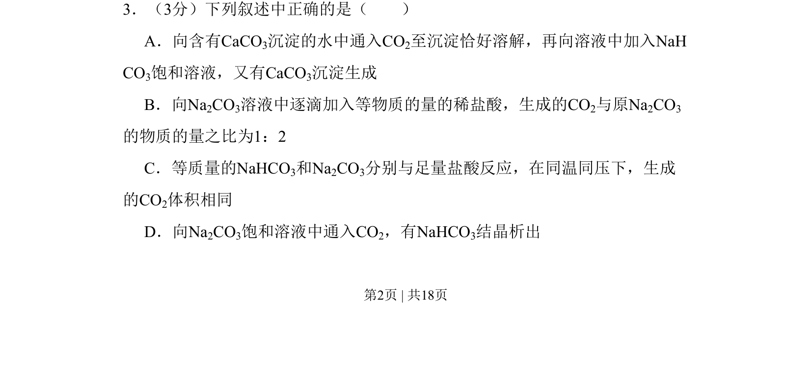
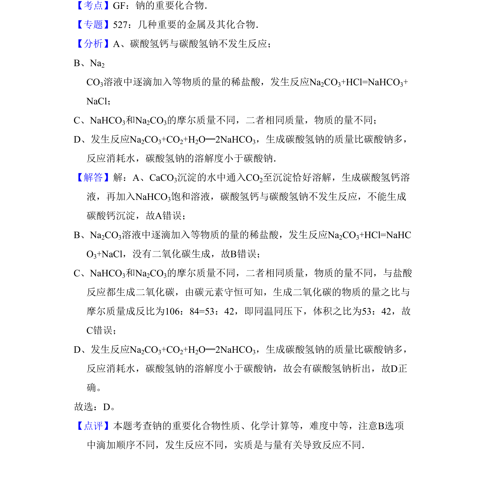

2009-全国Ⅱ-03
考点：沉淀溶解平衡 碳酸盐与碳酸氢盐转化 二氧化碳与盐反应 钠盐性质比较
题面


摘要
考查碳酸盐、碳酸氢盐的溶解性、转化及与酸和二氧化碳的反应规律。
关联考点
答案与解析

📄 原 PDF 第 2 页：
素材/真题/吉林/2008-2024·（吉林）化学高考真题/2009年高考化学试卷（全国卷Ⅱ）（解析卷）.pdf
考点：沉淀溶解平衡 碳酸盐与碳酸氢盐转化 二氧化碳与盐反应 钠盐性质比较

考查碳酸盐、碳酸氢盐的溶解性、转化及与酸和二氧化碳的反应规律。

📄 原 PDF 第 2 页：
素材/真题/吉林/2008-2024·（吉林）化学高考真题/2009年高考化学试卷（全国卷Ⅱ）（解析卷）.pdf